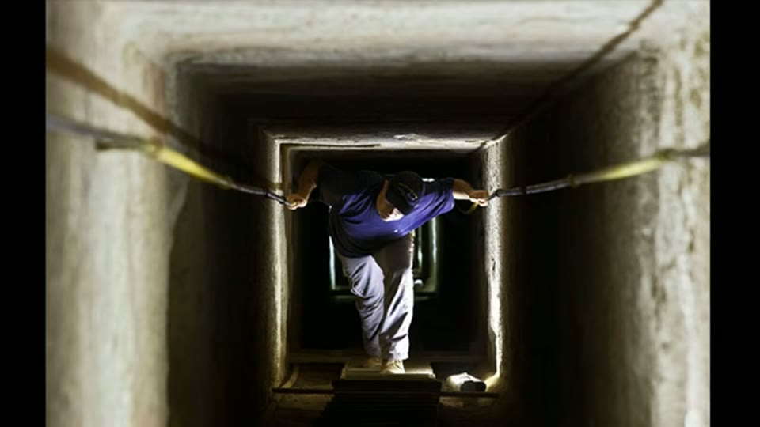
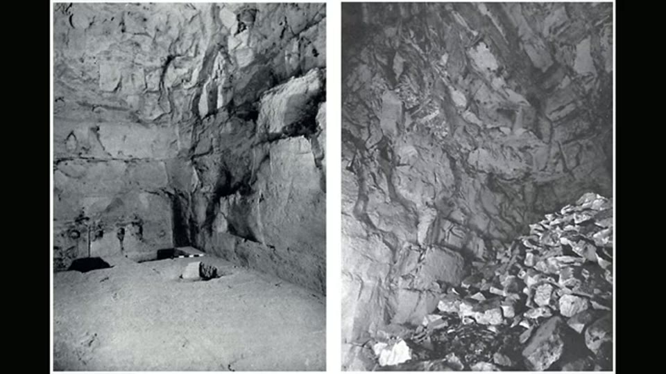

Curious Being
Egyptian Pyramids' Interior Enigma That Experts Can't Explain
Tina · 22 min · watch on YouTube · summarised 2026-09-27
The last step of the mine sequence, and the one that has to account for the awkward part. Having argued that the pyramids are cemented mine waste and that the Great Pyramid's interior is a seepage drainage system, she is left with a problem she states herself 01:55–02:18: the Great Pyramid is the only one built that way. Every other large pyramid has a descending passage going down to chambers at the bottom, and nothing else. If the drainage reading is right, why do the others not share it?
Four things that are odd about pyramid interiors
This is the useful half of the video, and none of it depends on her conclusion.
The passages are not built for people 03:00–04:52. The descending passage into the Great Pyramid's subterranean chamber has to be crawled through on all fours at its lowest. Across the pyramids the passages run under 4 ft high and slope at 26 to 27 degrees, against 7 to 18 degrees for a modern ramp. Her comparison is to the galleries inside modern gravity dams, which are built at human height because people have to get in to inspect and maintain them. Nothing needing maintenance, she argues, would be reached this way — and with the casing stones on, she questions whether the air down there was breathable at all.

The passages are too low to walk through, which is the observation the rest of the video turns on.
The substructures sit between the pyramid and the bedrock 06:14–06:51. Almost every large pyramid has at least one chamber connecting the mass above to the rock below. Menkaure is the exception: there, an angled tunnel does the connecting.
Chambers are placed where people cannot reach them 07:03–10:53. In the Red Pyramid, the upper chamber sits about 10 m above the one below it; without the modern wooden staircase there is no way in. The Bent Pyramid's three chambers are on markedly different levels, again with tall wooden stairs put in for visitors. At Menkaure the connecting tunnel ends 3 m above the chamber floor.
Precision work and rubble share the same room [03:31–04:06, 07:49–09:51]. The Great Pyramid's subterranean chamber is full of rubble and roughly shaped rock, with a shaft going down into the unknown; wind, she says, cannot have carried that much debris through a long narrow passage. The Red Pyramid's upper chamber has a perfect corbelled ceiling above a sunken pit of jumbled rubble, recessed several metres below the passage. She notes the rubble's edges are rounded, which she reads as water erosion, and that efflorescence salt is present.
The two cases are not the same thing, which her own footage shows. In the Great Pyramid's chamber the mass filling the floor is bedrock that was never cut away — ridges and stubs continuous with the walls, carrying tool faces — so no accumulation has to be explained. In the Red Pyramid the pit really is loose broken stone.

Precision stonework and a pile of broken rock in the same room — the contrast she calls the most astounding feature of the Red Pyramid.
The Bent Pyramid's burial chamber has a rough ceiling whose blocks, she says, "appear to be melted somehow", with rubble piles inside — in a pyramid that still carries most of its exterior casing.
The ancient builders had no problem constructing highly precise almost seamless casings but they left the interior chambers rough and unfinished?
She takes that as an argument against the tomb reading: a pharaoh would not have approved an unsatisfactory burial chamber under a fine exterior. The wooden beams in one chamber she puts down to later Egyptians repurposing the pyramid.
What runs under that passage is a pair of archival black-and-white excavation photographs, one with a photographic scale bar laid out on the floor. What they show is irregular rough-hewn rock rather than dressed blocks, which is the surface the word "melted" is applied to.

The Bent Pyramid's burial chamber is rough inside a pyramid that kept its fine casing outside.
Her four findings, stated together
10:53–11:31 — and she is explicit that they look unrelated:
1. small, steep passages that are not easy for humans to use 2. substructures located between the pyramid and the bedrock 3. sudden elevation changes between chambers 4. rubble and unfinished rock in the Great, Bent and Red pyramids
The proposal
12:10–18:35 Modern waste-rock piles put lysimeters at the bottom to sample seepage and check its acidity against local regulations. She raises the underground chambers as sampling stations and then rejects her own idea — the passages are too treacherous for regular access, and the air under a sealed casing would be dangerous.
What she settles on instead is treatment rather than monitoring. Limestone is a standard neutralising agent for acid mine drainage, and the pyramids, their chambers, their passages and the rubble in them are all limestone. Two published designs are put beside the substructures:
| system | what it is | what she matches it to |
|---|---|---|
| anoxic limestone drain | a buried bed of limestone that intercepts mine water below ground and keeps atmospheric oxygen out, so metals do not oxidise and armour the stone; dissolution generates alkalinity | the Great Pyramid's subterranean chamber with its rock channels and rubble, the pit as the drain hole — and pyramids with fewer chambers and long passages, such as Khafre and the smaller pyramids at Saqqara and Abusir |
| successive alkalinity producing system, or vertical flow | water moves downward through a series of ponds, gaining reaction time, with alkaline material at the bottom and a drain pipe at the end | the Bent and Red pyramids, whose chambers sit at different levels — the rubble pit as the limestone bed, the small connecting passages as the bottom drain pipes, the elevation drops as the gravity feed |

The second design: ponds at descending levels, which she matches to the stacked chambers of the Bent and Red pyramids.
On that reading the casing stones keep water and air out; the chambers collect and neutralise whatever gets in; water leaves through a drain hole like the Great Pyramid's pit, or along a low passage like Khafre's, once the chamber has filled. The descending passage becomes a vent: limestone neutralisation releases carbon dioxide, and she suggests the entrances sit high on the pyramids so the gas was discharged above head height.
The synopsis she ends on 19:23–20:35: mines beneath, waste above, casing to keep the weather out, and an interior designed to treat the acid drainage that forms inside — undertaken this carefully, she argues, to protect the Nile. Her closing analogy is a scene from Mad Men in which a family leaves its picnic rubbish on the grass, to make the point that standards of waste disposal change, and a more advanced culture's might look excessive to us.
What you can check yourself
- The passage dimensions and the 26–27° slope are published survey figures, and so is the comparison figure for modern ramps. Whether a passage can be walked upright is not a matter of opinion.
- The Red Pyramid's upper chamber and its wooden staircase are there to be photographed, as is the drop from the passage into the pit.
- Menkaure's tunnel opening above the chamber floor is a measurable feature.
- The rubble in the Great Pyramid's subterranean chamber and in the Red Pyramid's pit is visible in any decent photograph, and whether its edges are rounded is something a reader can judge.
- The efflorescence salt deposits are documented in the Great Pyramid and can be looked up.
- Limestone is genuinely used to neutralise acid mine drainage, and both the anoxic limestone drain and the successive alkalinity producing system are standard published designs with specifications a reader can compare against.
- The Bent Pyramid still carries most of its casing, and the state of its burial chamber ceiling is a photograph.
- The wooden beams in the Bent Pyramid have been sampled and dated, so her guess that they are a later Egyptian addition is a checkable claim rather than an open question.
What the video does not settle
- Every step is an analogy, and each one rests on the one before. The mine is inferred from shaft shapes, the waste storage from the mine, the drainage system from the waste storage, and the treatment system from the drainage system. Nothing in the chain is tested against a measurement, and by this video the premises being assumed are four deep.
- Where the water would come from is not addressed. The treatment designs she shows run on water moving through the mass year after year. Giza's rainfall is not mentioned anywhere in the video.
- Nothing is sampled. No analysis of the rubble or of the salt crusts is performed or proposed at any point.
- Maintenance is raised against one reading only. She rejects the monitoring reading on the grounds that nobody could reach the chambers. Whether a limestone treatment bed would need reaching is not discussed.
- "The builders would not have left a rough burial chamber" assumes the work was finished. That some chambers were left unfinished is her own reading of Menkaure's casing elsewhere, and it is not raised here.
- "The blocks appear to be melted" is an impression, offered without a comparison, a mineral test or a named process.
- Rounded rubble is read as water erosion. No other cause of rounding is considered and no measurement of the rounding is offered.
- The efflorescence is presented as a product of the system, with nothing offered that would distinguish it from salt deposits in any damp enclosed space.
- The Khafre niches are a guess on top of a guess. Rectangular recesses in the burial chamber are proposed as perforated drainage channels, followed by "maybe other pyramids have such small drain channels as well".
- Both diagrams state requirements the pyramids do not meet, in print on the slide. The anoxic limestone drain needs water that is already anoxic when it arrives, and a standpipe keeping the bed permanently flooded. The vertical flow system's ponds are labelled 90–200 cm deep, over an organic matter layer of 15–50 cm that is part of every stage. She sets the organic layer aside as unnecessary and does not address the rest; the chambers she compares them to are metres tall and separated by a 10 m drop.
- Both pyramid layouts are accommodated. Long passages and few chambers fit one treatment design; chambers on different levels fit the other. No arrangement is named that would not fit one of them.
- The frame shows uncut bedrock. She asks how so much material could have accumulated through a narrow passage; what is on screen at that moment is rock still attached to the chamber floor.
- "More advanced than us" is where the argument ends. The supporting comparison is a Mad Men scene about changing attitudes to waste.
See also
What were Great Pyramids' Function If Not Tombs? — the mine-waste storage argument this one builds on, with the six similarities and the material-analysis citations.
Prehistoric Mining: What was Mined on the Giza Plateau — the ore, and the acid-drainage staining she reads near Khafre.
The Pyramid Chemical Plant Theory — worth reading beside this one. There she rejects another researcher's theory partly because acid dissolves limestone; here the dissolution of limestone is the mechanism she needs. The two positions are consistent, and seeing why is a good exercise for a reader.
Great Pyramid: Not a Power Plant — where the sequence starts.